Manual do RouterFlow: uso e configuração
Este manual mostra, tela por tela, como usar o RouterFlow desde a instalação até a chapa cortada, e explica cada campo das configurações: o que ele faz, quando mexer e qual valor usar. Ele vale para a versão 3.8.16 em diante.
O caminho no programa é sempre o mesmo, e o menu da esquerda segue essa ordem: Projeto (escolher os CSV e gerar as chapas), Router (conferir o programa antes de cortar), Produção (cortar chapa a chapa) e Sobras (o que ficou e volta para o estoque). Antes do primeiro projeto, vale gastar dez minutos em Configurações para o programa sair do jeito da sua máquina.
Em cada tela, o botão da próxima etapa aparece maior, com a marca "PRÓXIMO PASSO" e a borda pulsando. Se estiver em dúvida sobre o que fazer, procure esse botão.
Instalar e ativar
- Baixe o instalador em www.routerflow.com.br, seção "Baixar a última versão". É um arquivo RouterFlow-Setup-versão.exe.
- Execute. Se o Windows mostrar "O Windows protegeu o computador", clique em "Mais informações" e depois em "Executar assim mesmo". O aviso aparece para qualquer programa novo sem reputação no Windows.
- O instalador cuida do componente WebView2 se ele faltar. Ao terminar, o RouterFlow abre sozinho.
- Na primeira abertura, o programa pede a chave de ativação. Vá na tela Licença.
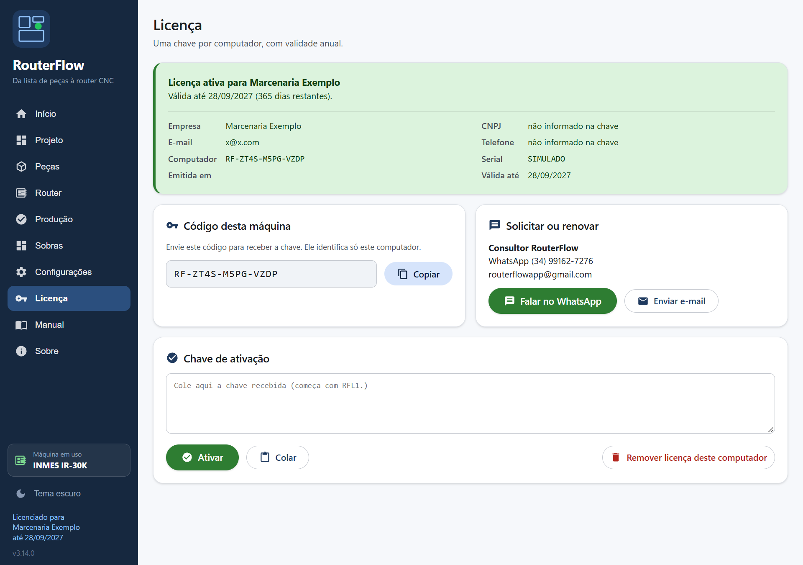
Como ativar:
- Copie o Código desta máquina (formato RF-XXXX-XXXX-XXXX). O botão "Copiar" põe na área de transferência.
- Clique em Falar no WhatsApp: a mensagem já vai montada com o código. Complete com razão social, CNPJ, e-mail e telefone da empresa.
- Você recebe uma chave que começa com RFL1. Cole no campo "Chave de ativação" (ou clique em "Colar da área de transferência") e em Ativar.
- O rodapé do menu lateral passa a mostrar "Licenciado para sua empresa até data".
A licença é presa a este computador e vale por 12 meses. A partir de 30 dias antes do vencimento, uma faixa no topo avisa; com 7 e 1 dia ela fica vermelha. Vencida, o programa bloqueia Projeto, Router e Produção até a chave nova. Com internet, a renovação chega sozinha na próxima abertura, sem colar nada. "Verificar agora" força a consulta na hora.
O RouterFlow se atualiza sozinho: quando sai versão nova, ele baixa, instala e abre de novo. Leva cerca de um minuto e a licença continua a mesma. Nenhuma configuração é perdida na atualização.
A tela Início
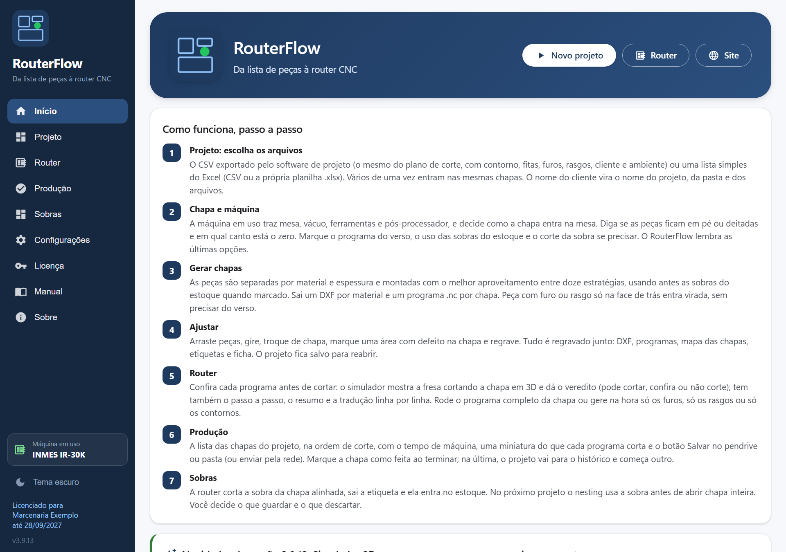
- Novo projeto leva à tela Projeto. Router abre a conferência de programas. Site abre www.routerflow.com.br no navegador.
- O cartão "Como funciona, passo a passo" resume as sete etapas.
- "Novidades da versão" mostra o que mudou na versão instalada. O histórico completo fica na tela Sobre.
- No menu lateral, embaixo, está a máquina em uso. Clique nela para trocar de máquina ou importar um pós-processador. O botão "Tema escuro" alterna o visual.
Antes do primeiro projeto: configurar a máquina
Abra Configurações. Quase tudo ali pertence à máquina em uso: mesa, vácuo, ferramentas, pós-processador e corte. Os padrões funcionam; mexa só no que a sua router pedir. Todo tópico tem um botão ? ao lado do título que explica por que ele existe, o que dá para fazer, como mexer e o que aparece ali.
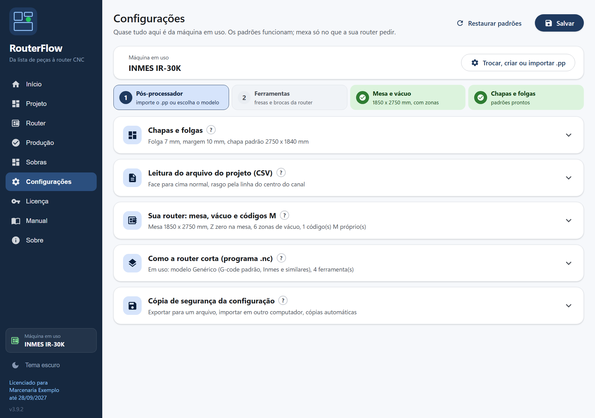
Dois botões no alto valem para a tela inteira: Salvar grava tudo o que você mudou (nada é gravado sem ele) e Restaurar padrões volta a máquina em uso aos valores de fábrica, sem mexer no estoque de sobras nem nas outras máquinas.
A linha do tempo "por onde começar" marca em verde o que já está pronto. A ordem certa é: 1 Pós-processador, 2 Ferramentas, 3 Mesa e vácuo, 4 Chapas e folgas.
Perfis de máquina
Cada máquina guarda a mesa, o vácuo, as ferramentas e o pós-processador. Clique em Trocar, criar ou importar .pp (ou na máquina do menu lateral).
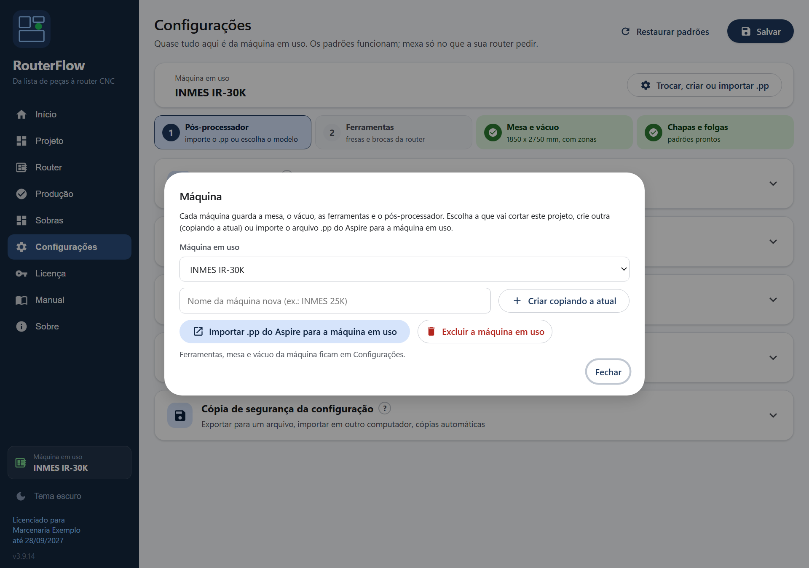
- Escolher: a lista mostra as máquinas cadastradas; selecione e confirme. A tela Projeto passa a gerar para ela.
- Criar: dê um nome (por exemplo "INMES 25K") e escolha se copia a configuração da máquina atual. Depois ajuste o que for diferente.
- Importar .pp do Aspire: se você já tem o arquivo de pós-processador que usa no Aspire, importe. O RouterFlow lê cabeçalho, troca de ferramenta, rodapé, numeração e formato dos números.
- Renomear e Excluir ficam na mesma janela. A máquina em uso não pode ser excluída.
Pós-processador
É o tradutor entre o RouterFlow e o controlador da sua router: define como o programa começa, como troca de ferramenta, como termina e como escreve os números.
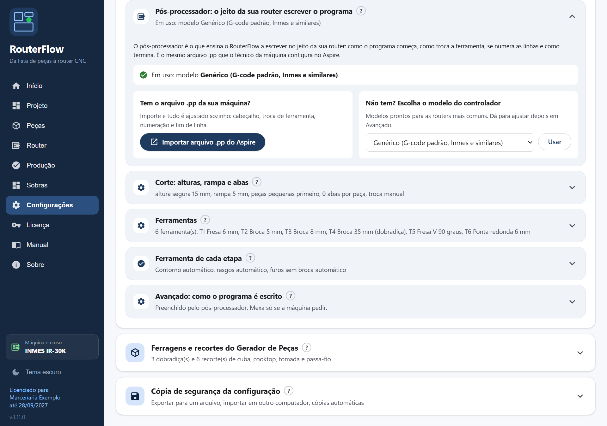
| O que fazer | Quando |
|---|---|
| Importar arquivo .pp do Aspire | Você já corta com o Aspire nessa máquina. É o caminho mais seguro: o programa sai exatamente como a máquina já conhece |
| Escolher o modelo INMES IR-30K, programa real | Router Inmes sem o .pp em mãos. Copiado de um programa que rodou na máquina: sem numeração de linha |
| Modelo INMES IR-30K / IN-50K | Formato do .pp de fábrica da Inmes, com numeração de linha |
| Mach3, GRBL, Fanuc | Controladores desses tipos. Fanuc serve para Syntec, Weihong e LNC |
| Genérico | G-code padrão, para testar em qualquer máquina |
Depois de escolher, o tópico "Avançado" mostra os textos que o modelo gerou. Não precisa mexer neles.
Ferramentas
É a tabela das fresas e brocas da sua router. O programa .nc usa esses números para compensar o contorno, decidir qual ferramenta cabe em cada furo e rasgo, e escrever a rotação, o avanço e a profundidade de cada passada.
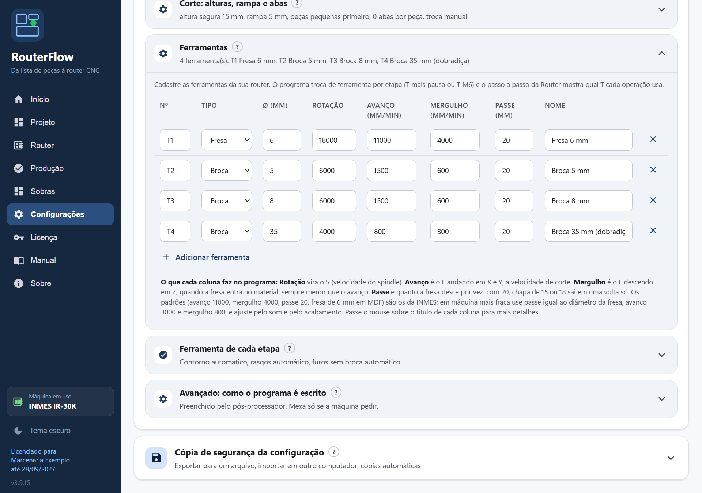
Os dois tipos
| Tipo | Para que serve | Como o programa usa |
|---|---|---|
| Fresa | Contornos das peças, rasgos e furos que não têm broca do diâmetro (fresados em círculo) | Anda pelo contorno deslocada meio diâmetro para fora da peça; desce em passes até a profundidade |
| Broca | Furos de face: cavilha, minifix, dobradiça | Só é usada quando o diâmetro dela é igual ao do furo. Desce reta no centro do furo |
Cada coluna
| Coluna | O que é | O que vira no programa |
|---|---|---|
| Nº | Número da ferramenta: T1, T2... | O T da troca. Tem de ser o mesmo número da posição no trocador, ou o que o operador vai montar quando o programa parar na troca manual |
| Tipo | Fresa ou Broca | Decide a regra de escolha acima |
| Ø (mm) | Diâmetro de corte | Compensação do contorno e teste "cabe no rasgo?" e "cabe no furo?" |
| Rotação | Rotação do spindle em rpm | O S do programa (M3 S18000) |
| Avanço (mm/min) | Velocidade de corte andando em X e Y | O F dos movimentos no plano |
| Mergulho (mm/min) | Velocidade descendo em Z ao entrar no material | O F das descidas: furos, começo de cada passe e a rampa |
| Passe (mm) | Profundidade máxima de cada passada | Chapa de 18 com passe 6 sai em três voltas; com passe 20 sai em uma só. Em broca, é quanto desce antes de subir para tirar o cavaco |
| Nome | Como você chama a ferramenta | Sai no comentário da troca e nas listas da Router |
Valores recomendados
Os padrões de fábrica são os de uma router Inmes IR-30K cortando MDF de 15 e 18 mm com fresa de 6 mm, medidos num programa real da máquina. Use como ponto de partida:
| Ferramenta | Rotação | Avanço | Mergulho | Passe | Observação |
|---|---|---|---|---|---|
| Fresa 6 mm (contorno, MDF/MDP) | 18000 | 11000 | 4000 | 20 | Padrão. Uma volta só em chapa de 15 ou 18 |
| Fresa 6 mm, máquina mais leve ou fresa gasta | 18000 | 3000 a 5000 | 800 a 1200 | 6 | Três voltas em 18 mm; passe igual ao diâmetro é a regra segura |
| Fresa 8 mm (contorno em chapa grossa) | 18000 | 12000 | 4000 | 20 | Mais robusta, acabamento parecido |
| Fresa 4 mm (rasgos de fundo, canais estreitos) | 20000 | 5000 | 1500 | 4 | Rasgo de 4 mm de largura só sai com ela. Passe pequeno: a fresa é fina |
| Fresa 3 mm (detalhes) | 20000 | 3000 | 800 | 3 | Só para o que a fresa de 6 não alcança |
| Broca 5 mm (cavilha) | 6000 | 1500 | 600 | 20 | Furo de uma descida só |
| Broca 8 mm (minifix, parafuso) | 6000 | 1500 | 600 | 20 | |
| Broca 15 mm (corpo do minifix) | 5000 | 1000 | 400 | 20 | |
| Broca 35 mm (caneco da dobradiça) | 4000 | 800 | 300 | 20 | Se engasgar ou queimar, volte o passe para 6 |
| Compensado ou madeira maciça | igual | 30% menor | 30% menor | igual | Fibra longa segura mais |
| Acrílico ou PVC expandido | 12000 | 1500 a 2500 | 500 | igual ao diâmetro | Rotação alta derrete |
Regras que não mudam:
- Mergulho sempre menor que o avanço. A ponta da fresa corta pior que o lado.
- Para cortar de uma vez até a mesa, o passe tem de ser maior que a espessura mais a entrada na mesa: 16 para chapa de 15, 19 para chapa de 18. O 20 cobre as duas.
- Barulho e acabamento mandam. Fresa gritando, lascando a chapa ou peça com marca de queimado: reduza o avanço em 20% e teste de novo. Cheiro de queimado com avanço baixo: aumente o avanço ou reduza a rotação.
- Fresa nova, valores novos. Trocou a fresa por outra de diâmetro diferente, mude o Ø aqui, senão o contorno sai com a medida errada.
Como o programa escolhe a ferramenta
- Furo com broca do diâmetro exato na tabela: usa a broca.
- Furo sem broca: usa a fresa escolhida em "Ferramenta de cada etapa" (ou a maior que cabe), fresando em círculo.
- Rasgo: fresa escolhida para rasgos, desde que caiba na largura do canal; senão a maior que cabe.
- Contorno: fresa escolhida para contornos, ou a maior cadastrada.
Se nenhuma ferramenta cabe num furo ou rasgo, a peça sai com aviso na ficha e no resultado ("nenhuma ferramenta cabe nesse furo"), e o botão do aviso abre esta tabela.
Adicionar, editar e remover: "Adicionar ferramenta" cria uma linha nova; o X no fim da linha remove; qualquer campo é editável direto na tabela. Lembre de Salvar no alto da tela.
Ferramenta de cada etapa
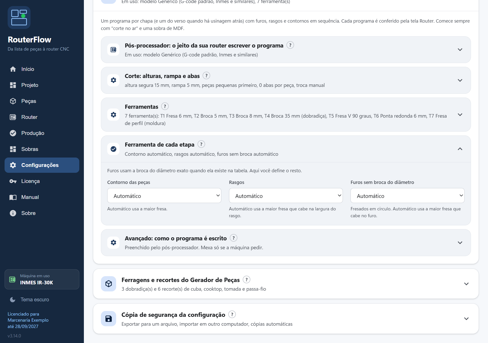
Três seleções, cada uma com a lista das fresas cadastradas:
| Etapa | Automático faz | Quando fixar |
|---|---|---|
| Contorno das peças | Usa a maior fresa cadastrada | Você tem uma fresa de 8 para desbaste e quer o contorno com a de 6 |
| Rasgos | Usa a maior fresa que cabe na largura do rasgo | Quer sempre a fresa de 4 nos rasgos, mesmo em canais largos |
| Furos sem broca do diâmetro | Usa a maior fresa que cabe no furo | Quer uma fresa específica para fresar furos grandes |
Se a fresa fixada não couber no rasgo ou no furo, o programa usa a maior que cabe e avisa. Programa já gerado não muda: gere o projeto de novo depois de salvar.
Corte: alturas, rampa e abas
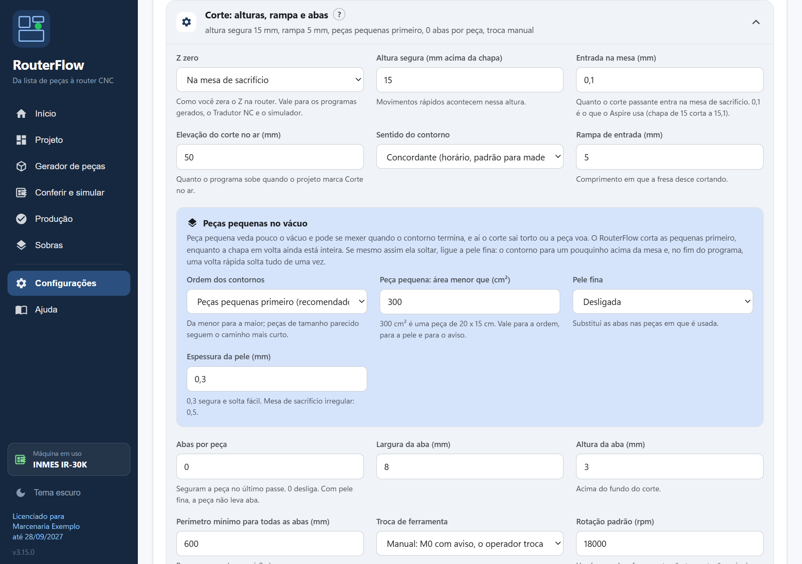
| Campo | O que é | Padrão | Quando mudar |
|---|---|---|---|
| Z zero | Onde o operador zera o Z: na mesa de sacrifício ou no topo da chapa | Na mesa | Tem de ser igual ao jeito que o operador zera. Se ele zera no topo da chapa, mude aqui, senão todo o corte fica deslocado uma espessura |
| Altura segura (mm acima da chapa) | Altura dos movimentos rápidos entre operações | 15 | Grampos ou batentes altos na mesa: aumente |
| Entrada na mesa (mm) | Quanto o corte passante entra na mesa de sacrifício | 0,1 | É o que o Aspire usa (chapa de 15 corta a 15,1). Mesa muito irregular: 0,3 |
| Elevação do corte no ar (mm) | Quanto o programa sobe no modo de teste sem chapa | 50 | Só se 50 mm não der para enxergar o percurso |
| Sentido do contorno | Concordante (horário, padrão para MDF) ou discordante | Concordante | Discordante dá acabamento diferente em alguns materiais; teste numa sobra |
| Rampa de entrada (mm) | Comprimento em que a fresa desce cortando, em vez de mergulhar reto | 5 | Máquina leve ou fresa fina: 20 a 40 poupa a ponta da fresa. 0 mergulha reto |
| Abas por peça | Pontes de material deixadas no último passe para a peça não soltar | 0 | Sem vácuo ou com vácuo fraco: 2 a 4. Com abas, o operador quebra e lixa depois |
| Largura da aba (mm) | Comprimento da ponte | 8 | Peças pesadas: 10 a 12 |
| Altura da aba (mm) | Quanto de material fica, acima do fundo do corte | 3 | Chapa de 6 mm: 2 |
| Perímetro mínimo para todas as abas (mm) | Peças menores que isso levam só 2 abas | 600 | Raramente |
| Troca de ferramenta | Manual (M0 com aviso, o operador troca) ou Automática (T M6) | Automática | Máquina sem trocador: Manual. O programa para, mostra qual ferramenta montar e espera |
| Rotação padrão (rpm) | Usada quando a ferramenta não tem rotação própria | 18000 | Raramente |
As quatro caixas abaixo dos campos:
- Corte no ar: eleva o programa inteiro (pela elevação acima) para conferir o percurso na máquina sem chapa. Use na primeira vez em cada máquina. Também dá para ligar por projeto, na tela Projeto, e nunca fica marcado sozinho.
- Gerar também um programa separado por operação: além do programa completo de cada chapa, gera um só com furos, um só com rasgos e um só com contornos. Desligado por padrão; na tela do projeto dá para escolher por chapa.
- Cortar a sobra da chapa como um retângulo alinhado: a router solta o retalho com cortes retos, sai etiqueta e ele entra no estoque. Também se escolhe por projeto.
- Corte de linha comum: peças vizinhas coladas a exatamente um diâmetro de fresa compartilham a aresta; a segunda pula o trecho. Menos tempo e menos pó. Para funcionar, a folga entre peças (em Chapas e folgas) tem de ser igual ao diâmetro da fresa do contorno. Teste numa sobra antes de usar em produção.
Sua router: mesa, vácuo e códigos M
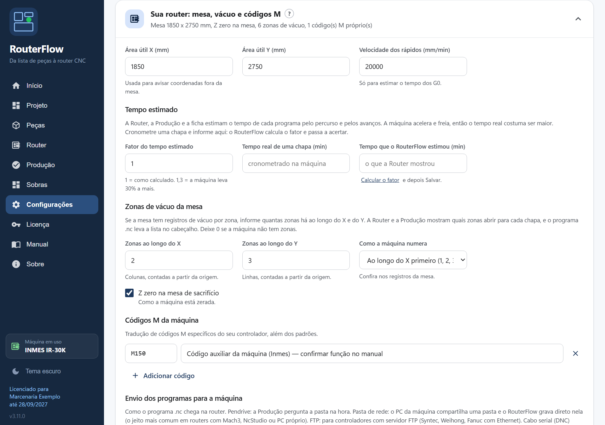
| Campo | O que é | Como preencher |
|---|---|---|
| Área útil X e Y (mm) | O tanto que a fresa alcança na mesa, em X e em Y | Meça ou pegue no manual da máquina. Exemplo Inmes IR-30K: 1850 no X e 2750 no Y. É isso que decide se a chapa entra em pé ou deitada, e a Router avisa em vermelho o que passa da mesa |
| Velocidade dos rápidos (mm/min) | Só para estimar o tempo dos movimentos G0 | 20000 é comum |
| Z zero na mesa de sacrifício | O mesmo Z zero do tópico Corte, visto daqui | Marque se o operador zera na mesa |
| Zonas ao longo do X e do Y | Quantos registros de vácuo a mesa tem em cada sentido | Mesa com 6 zonas em 2 colunas e 3 linhas: X 2, Y 3. Sem zonas: 0 e 0 |
| Como a máquina numera | Se a zona 2 é a próxima no X ou no Y | Confira nos registros da mesa |
| Códigos M | Códigos próprios da máquina: ligar vácuo, exaustor, refrigeração | "Adicionar código", escreva o código (M8, por exemplo), o que ele faz e quando entra: início, fim ou troca |
Com as zonas cadastradas, a Router desenha a grade sobre a mesa e destaca as zonas que cada chapa usa ("abrir 1, 2 e 4, fechar as outras"), a Produção repete isso por chapa, e o programa .nc leva a lista num comentário.
Chapas e folgas
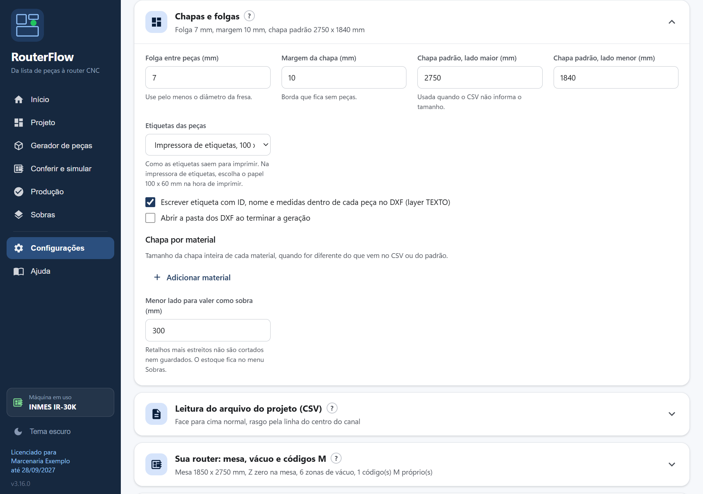
| Campo | O que é | Valor |
|---|---|---|
| Folga entre peças (mm) | Espaço que o nesting deixa entre uma peça e outra | No mínimo o diâmetro da fresa do contorno: 7 para fresa de 6. Para o corte de linha comum, exatamente o diâmetro |
| Margem da chapa (mm) | Borda da chapa que fica sem peças | 10. Chapa com borda batida: 15 a 20 |
| Chapa padrão, lado maior e menor (mm) | Usada quando o CSV não informa o tamanho (lista simples) | 2750 x 1840 é a chapa de MDF comum; 2750 x 1850 para MDP |
| Menor lado para valer como sobra (mm) | Retalhos mais estreitos não são cortados nem guardados | 300. Oficina que aproveita tira estreita: 200 |
| Etiquetas das peças | Impressora de etiquetas 100 x 60 mm (uma por etiqueta) ou folha A4 com 8 | Escolha pela impressora que você tem |
| Chapa por material | Tamanho da chapa de cada material, quando é diferente do padrão | "Adicionar material" com o nome exatamente como vem no CSV, e as medidas |
As caixas: etiqueta com ID, nome e medidas dentro de cada peça no DXF (layer TEXTO, útil no Aspire) e abrir a pasta dos DXF ao terminar.
Leitura do arquivo do projeto (CSV)
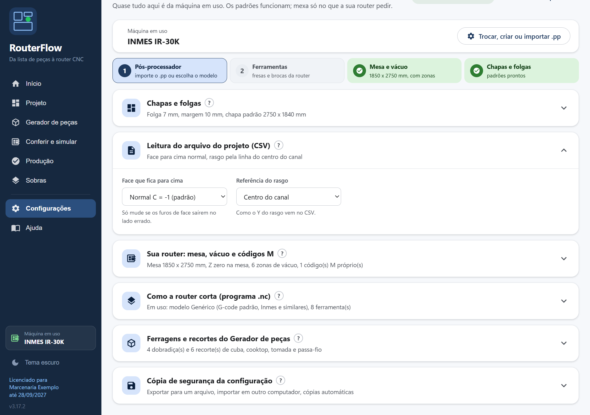
- Face que fica para cima: qual face da peça o software de projeto considera a de cima. Só mude se os furos e rasgos saírem espelhados (na face errada).
- Referência do rasgo: se a medida do rasgo no CSV é a linha do centro do canal ou a borda. Mude se os rasgos saírem deslocados metade da largura.
O mapeamento de colunas de um CSV de outro software não fica aqui: ele é feito na tela Projeto, no botão "Colunas" de cada arquivo, e o RouterFlow lembra por tipo de arquivo.
Avançado: como o programa é escrito
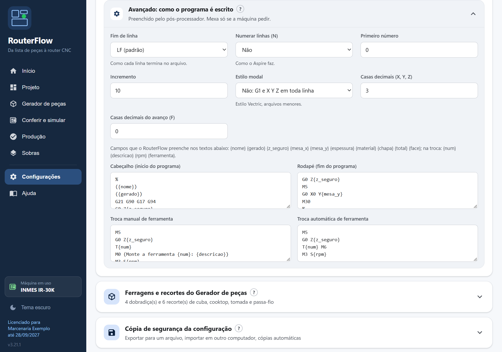
Tudo aqui vem preenchido pelo pós-processador escolhido. Só mexa se a máquina recusar o programa ou se o fabricante pedir algo específico: numeração de linhas (N), fim de linha (CRLF ou LF), escrita modal (repetir ou não o G1 em cada linha), casas decimais, e os textos de cabeçalho, rodapé e troca, que aceitam variáveis como {rpm}, {num} e {z_seguro}. "Restaurar padrões" volta ao modelo escolhido.
Cópia de segurança da configuração
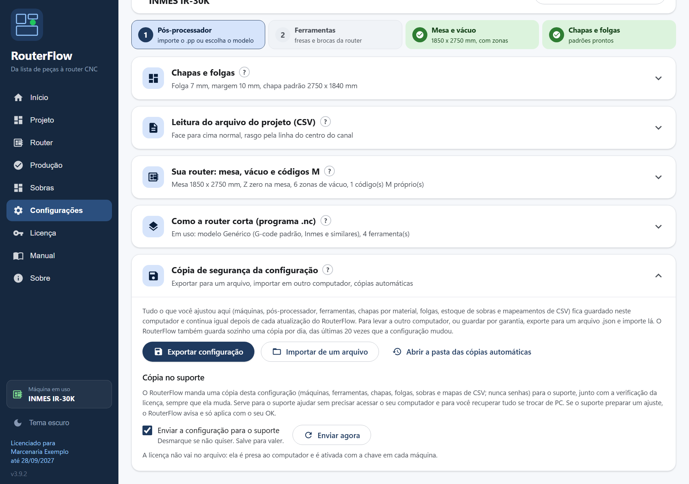
- Exportar configuração salva um arquivo .json com máquinas, pós-processador, ferramentas, chapas, folgas, estoque de sobras e mapeamentos de CSV.
- Importar de um arquivo aplica esse arquivo em outro computador (ou no mesmo, depois de formatar). Antes, uma cópia do que estava lá é guardada.
- Abrir a pasta das cópias automáticas: o RouterFlow guarda sozinho uma cópia por dia, das últimas 20 mudanças.
- A licença não vai no arquivo: ela é ativada com a chave em cada computador. Atualizar o RouterFlow nunca apaga a configuração.
Projeto: da lista de peças às chapas
Etapa 1: arquivos
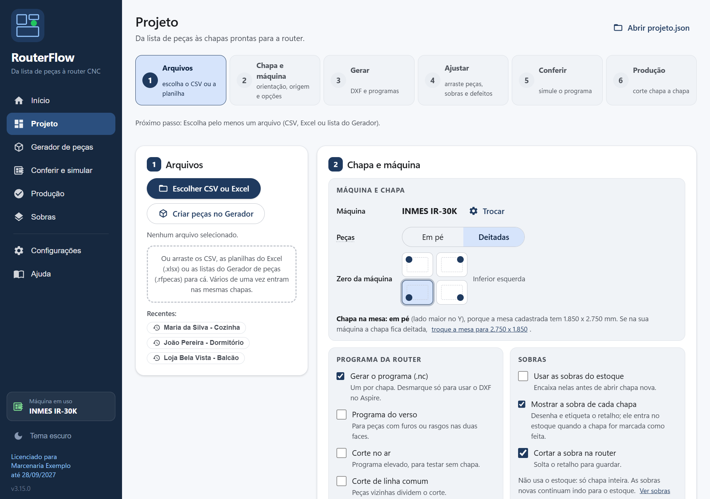
- Escolher CSV abre a janela de arquivos. Dá para escolher vários de uma vez: as peças de todos entram nas mesmas chapas, com o nome do projeto no ID de cada peça. Também dá para arrastar os arquivos para a área tracejada.
- O CSV do software de projeto (o mesmo do plano de corte) traz contorno, fitas, furos, rasgos, cliente e ambiente. O nome do cliente vira o nome do projeto, da pasta e dos arquivos.
- Lista simples: qualquer CSV com nome, comprimento, largura, espessura, quantidade, material e veio (do Excel, do Corte Certo, de outro programa). Sem furos e rasgos, porque a lista não os traz.
- Recentes reabre os últimos projetos com um clique. Abrir projeto.json (no alto, à direita) reabre qualquer projeto gerado antes, para ajustar ou regravar.
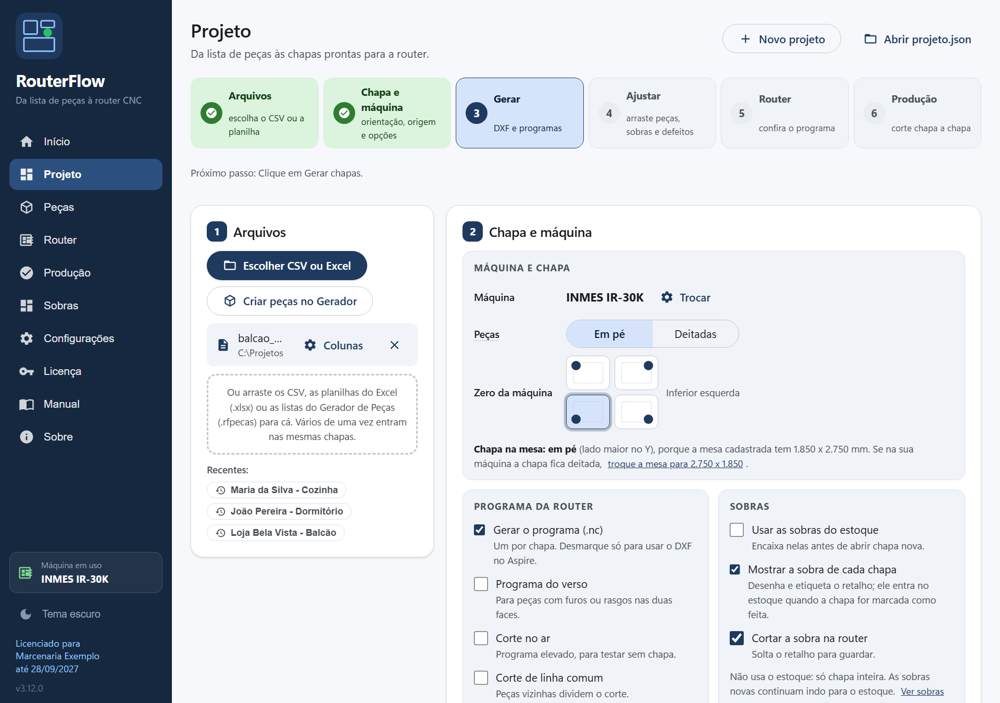
Se o RouterFlow não reconhecer as colunas de um arquivo, ele abre a janela de mapeamento. O botão Colunas ao lado de cada arquivo abre a mesma janela quando quiser conferir.
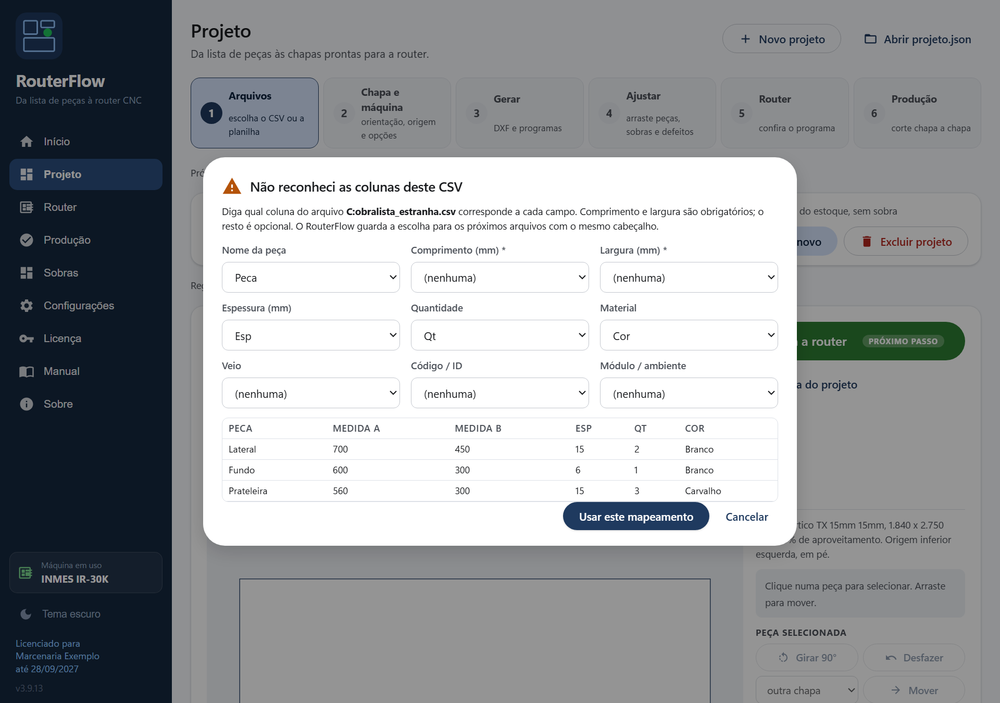
Diga qual coluna do arquivo é cada campo, olhando a amostra das primeiras linhas. Comprimento e largura são obrigatórios. A escolha fica guardada para os próximos arquivos com o mesmo cabeçalho.
Etapa 2: chapa e máquina
- Máquina: a que vai cortar este projeto. "Trocar" abre a janela de máquinas.
- Peças na chapa: Em pé (lado maior das peças no Y da máquina) ou Deitadas (no X). Vale para as peças sem veio; peça com veio segue o veio da chapa. O encaixe enche uma faixa ao longo do lado comprido da chapa antes de alargar, e a sobra fica uma tira inteira; uma peça sem veio gira 90 graus quando é assim que ela cabe no fim da fileira. A orientação pedida só vale enquanto não custa chapa nem espaço. Logo abaixo, uma linha diz como a chapa entra na mesa (em pé ou deitada, pela área útil cadastrada) e avisa se ela não cabe.
- Origem (zero da máquina): o canto da chapa onde fica o zero. Os quatro botões desenham o canto; o texto embaixo confirma. O encaixe começa por esse canto e os eixos aparecem no editor.
- Salvar em: ao lado do CSV (padrão) ou numa pasta fixa.
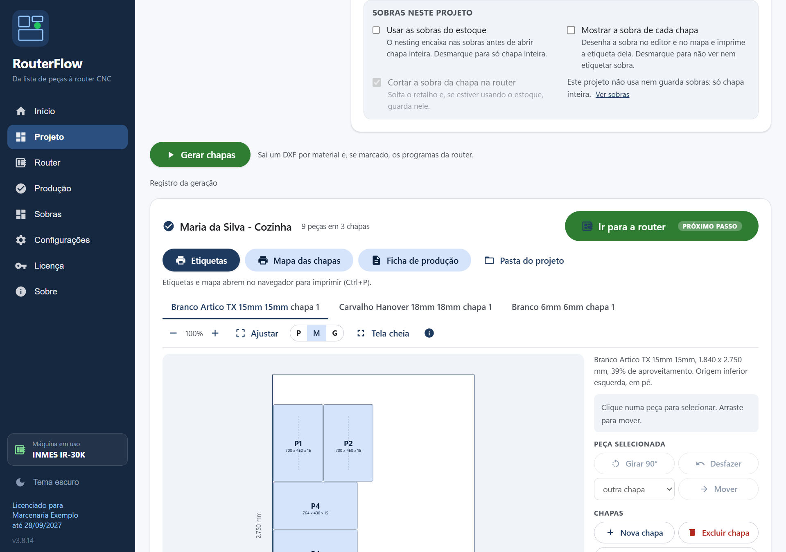
As caixas:
| Caixa | Marcada | Desmarcada |
|---|---|---|
| Gerar o programa da router (.nc) | Sai um .nc por chapa, além do DXF | Só DXF, para quem usa o Aspire |
| Programa do verso (chapa virada) | Quando há furos ou rasgos atrás da peça, sai um programa espelhado para a chapa virada | Usinagem do verso fica de fora |
| Unir tudo numa chapa só | Todas as peças juntas, sem separar por material | Uma chapa por material e espessura (o normal) |
| Corte no ar (teste sem chapa) | Programa elevado para conferir o percurso. Nunca fica marcado sozinho | Corte normal |
| Usar as sobras do estoque | O nesting encaixa nas sobras guardadas antes de abrir chapa inteira | Só chapa inteira, sem reservar nem guardar nada |
| Mostrar a sobra de cada chapa | Desenha a sobra no editor e no mapa, imprime a etiqueta dela e permite cortar | O projeto não calcula, não mostra nem etiqueta sobra |
| Cortar a sobra da chapa na router | A router solta o retalho alinhado, sai etiqueta e ele vai para o estoque | O retalho fica na chapa |
O RouterFlow lembra as últimas escolhas para o próximo projeto, menos "Corte no ar".
Etapa 3: gerar chapas
Com pelo menos um arquivo escolhido, o botão Gerar chapas fica ativo e marcado como próximo passo. Ao clicar, o registro da geração mostra o que está acontecendo: leitura dos arquivos, nesting por material (doze estratégias, fica a melhor), gravação dos arquivos.
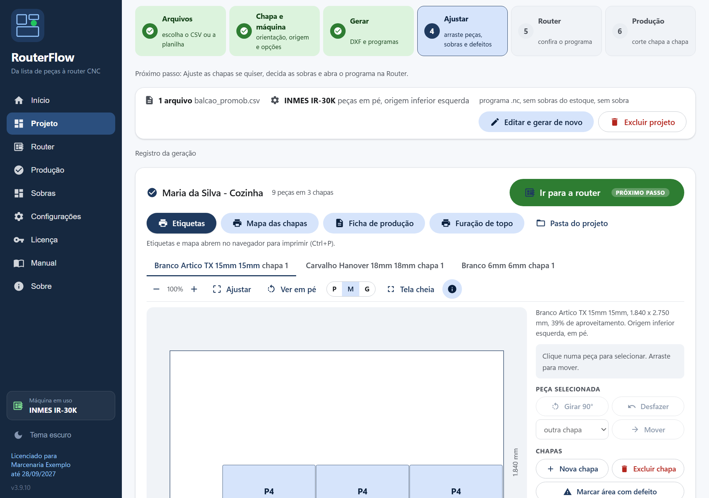
Assim que as chapas saem, as etapas 1 e 2 se recolhem numa linha de resumo: os arquivos, a máquina, a orientação das peças, a origem e as opções marcadas. Para trocar qualquer coisa (outro arquivo, outra máquina, ligar o verso, mudar a origem), clique em Editar e gerar de novo: as duas etapas abrem outra vez e o botão Gerar chapas regrava os arquivos do projeto na mesma pasta. Nada do que foi gerado antes se perde: o projeto.json guarda tudo.
Os arquivos DXF e os programas .nc não aparecem listados na tela: uma linha diz quantos foram gravados e em que pasta. Os programas ficam na Router (para conferir) e na Produção (pendrive e chapa feita); o DXF é para quem usa o Aspire e está na pasta do projeto.
O que sai na pasta do projeto (Cliente - Ambiente_RouterFlow):
| Arquivo | O que é |
|---|---|
| Cliente_Material.dxf | Todas as chapas do material num DXF só, layers CONTORNO, FURO_D5_P12, RASGO_L6_P6, TEXTO e CHAPA, na orientação e origem da mesa |
| Cliente_Material_VERSO.dxf | Usinagem da face de trás, espelhada, quando existe |
| Cliente_Material_chapa1.nc | Programa da router de cada chapa (e _VERSO.nc quando marcado) |
| etiquetas.html, mapa_chapas.html, ficha_producao.html | Impressos, abrem no navegador para imprimir com Ctrl+P |
| lista_pecas.csv, lista_fitagem.csv, ferragens.csv | Planilhas para Excel ou para o seu sistema |
| projeto.json | O projeto inteiro, para reabrir |
| relatorio.txt | Resumo em texto |
Etapa 4: ajustar no editor de chapas
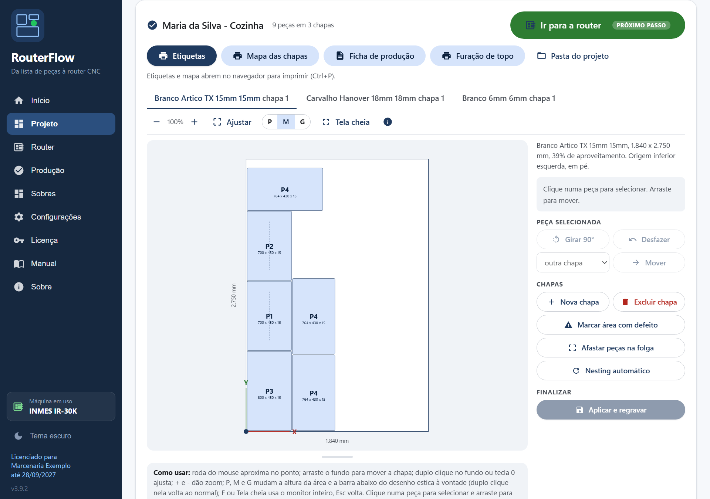
No alto: o nome do projeto, quantas peças em quantas chapas, e o botão Ir para a router (próximo passo). Logo abaixo, Etiquetas, Mapa das chapas, Ficha de produção e Pasta do projeto. No fim do cartão ficam as sobras de cada chapa (quando marcadas) e os avisos do projeto.
Uma aba por chapa, com material e número. A barra acima do desenho:
- - 100% + zoom; Ajustar enquadra a chapa; P, M, G mudam a altura da área do desenho; Tela cheia usa o monitor inteiro (Esc volta); o botão i mostra ou esconde as dicas.
- Roda do mouse: zoom no ponto. Arraste o fundo: move a chapa. Duplo clique no fundo ou tecla 0: ajusta. A barra fina abaixo do desenho estica a área à vontade.
O painel da direita:
| Grupo | Botão | O que faz |
|---|---|---|
| Peça selecionada | Girar 90° | Gira a peça selecionada. Peça com veio avisa se o veio vai sair errado |
| Desfazer | Volta o último movimento | |
| outra chapa e Mover | Leva a peça para a chapa escolhida na lista | |
| Chapas | Nova chapa | Abre uma chapa vazia do mesmo material |
| Excluir chapa | Remove a chapa (só vazia) | |
| Marcar área com defeito | Cria um retângulo vermelho (nó, lasca, borda batida); arraste até o lugar e ajuste o tamanho. Nenhuma peça entra ali | |
| Afastar peças na folga | Empurra as peças mais perto que a folga até a folga certa, sem sair da chapa | |
| Nesting automático | Refaz o encaixe de todas as chapas, desviando das áreas com defeito. Descarta as alterações à mão | |
| Finalizar | Furos, Rasgos, Contornos | Marque para gerar, além do programa completo, um programa só com aquela operação |
| Aplicar e regravar | Regrava DXF, programas, mapa, etiquetas e ficha com as alterações. Fica como próximo passo quando você mexeu | |
| Abrir .nc na Router | Regrava e já abre o programa desta chapa na Router |
Arrastar uma peça: clique nela e arraste. Ao soltar perto de outra, o encaixe mantém a folga sozinho. Peças sobrepostas ficam vermelhas e não deixam regravar; peças mais perto que a folga ficam laranja e são afastadas sozinhas ao regravar.
Quando "Mostrar a sobra" está marcado, o maior retalho de cada chapa aparece tracejado em verde, com três escolhas no painel: Cortar e guardar (etiqueta e estoque), Cortar e descartar (só corta) ou Deixar na chapa.
Abaixo do editor, os avisos do projeto: cada um explica o que aconteceu, o que fazer e tem um botão que leva ao lugar certo (uma configuração, o editor ou a ficha).
Histórico
No fim da tela Projeto, "Histórico de projetos" lista tudo o que já foi gerado neste computador, com data, chapas e peças. Reabra para ajustar ou regravar.
Router: conferir o programa antes de cortar
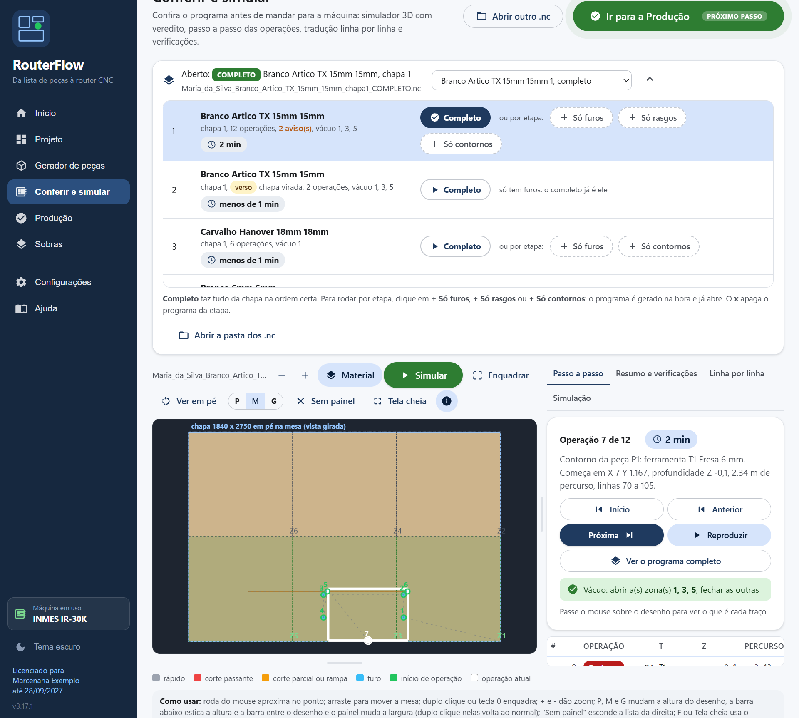
A Router abre sozinha no programa completo da primeira chapa quando você vem do projeto. Abrir outro .nc carrega qualquer programa, inclusive de outra origem (Aspire, por exemplo), para conferir. O botão Ir para a Produção é o próximo passo.
A lista de programas mostra material, chapa, face (frente ou verso) e as zonas de vácuo. A seleção rápida troca de programa sem abrir a lista.
O desenho: a mesa com a área útil tracejada, a chapa como foi gerada (deitada ou em pé; vermelha se não cabe), a grade de vácuo com as zonas a abrir em verde, e o percurso colorido pela legenda: cinza rápido, vermelho corte passante, laranja rampa ou corte parcial, azul furo, verde início de operação, branco a operação atual. Passe o mouse sobre um traço para ver a linha do programa. Enquadrar, zoom, P M G, Sem painel e Tela cheia funcionam como no editor.
O painel da direita tem três abas:
- Passo a passo: Início, Anterior, Próxima e Reproduzir andam operação por operação; o desenho mostra as feitas em cinza, a atual em branco e as próximas escondidas. A tabela lista cada operação com tipo (furo, rasgo, contorno, sobra), peça, ferramenta T, Z e percurso. "Mostrando o programa completo" volta a mostrar tudo.
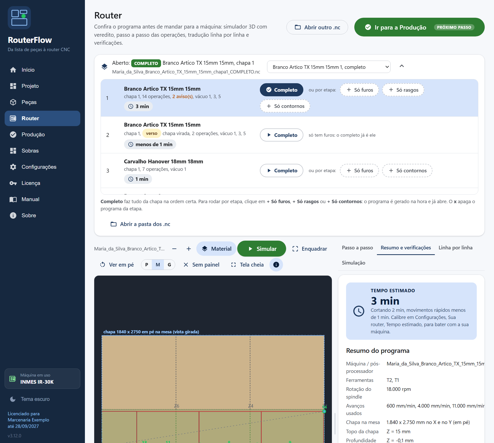
- Resumo e verificações: máquina, ferramentas, rotação, avanços, chapa na mesa (tamanho e sentido), topo da chapa, profundidade mínima, área percorrida, tempo estimado e as verificações de segurança: rápido dentro da chapa, corte sem avanço, spindle desligado, coordenadas fora da mesa, corte entrando demais na mesa. Cada aviso diz o que fazer.
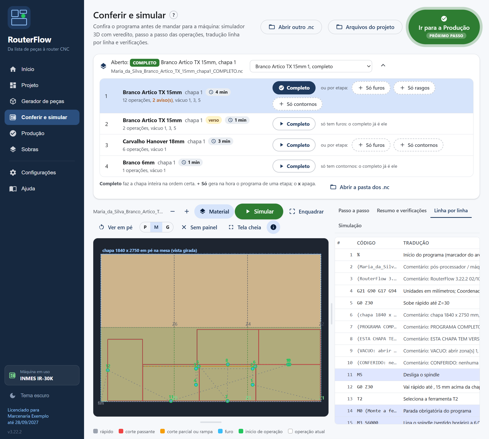
- Linha por linha: o programa inteiro traduzido, linha a linha, com o que cada comando faz e o aviso na linha, quando houver.
Produção: cortar chapa a chapa
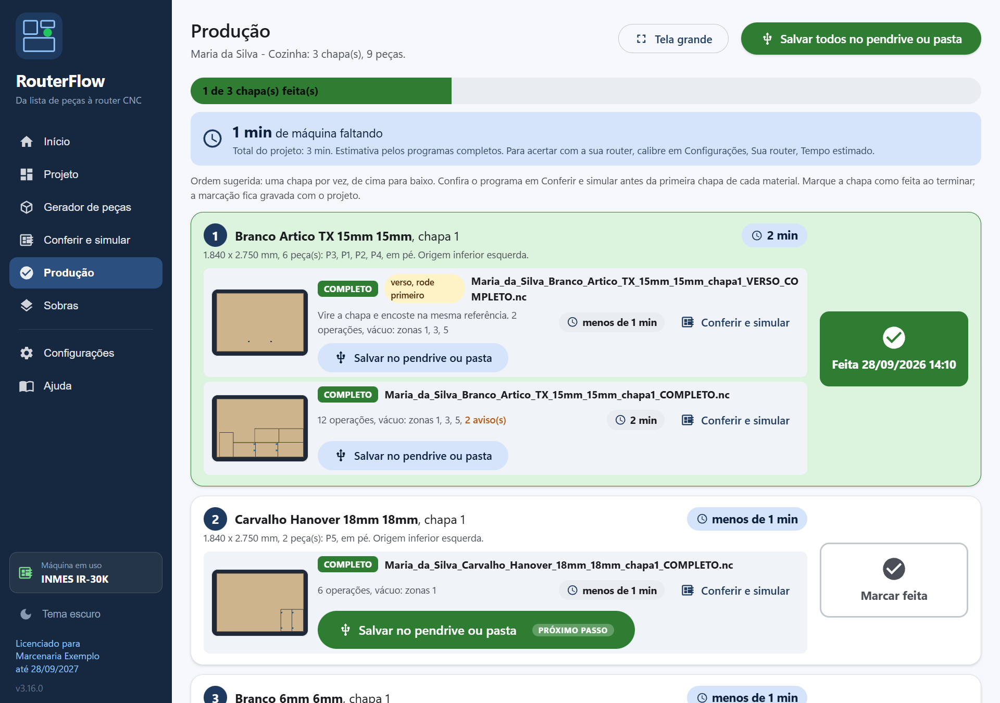
É a tela de quem está na máquina. Cada chapa tem miniatura, material, peças, o programa (e o do verso), quantas operações, tempo e as zonas de vácuo a abrir.
- Ver na Router abre aquele programa para conferir.
- Pendrive copia só aquele programa para o pendrive. Todos os .nc para o pendrive (no alto, próximo passo) copia todos.
- Marcar feita registra a chapa cortada; a barra de progresso e a data ficam gravadas com o projeto, então dá para fechar e continuar no dia seguinte.
- Tela grande aumenta tudo para ler de longe.
Sobras: o estoque de retalhos
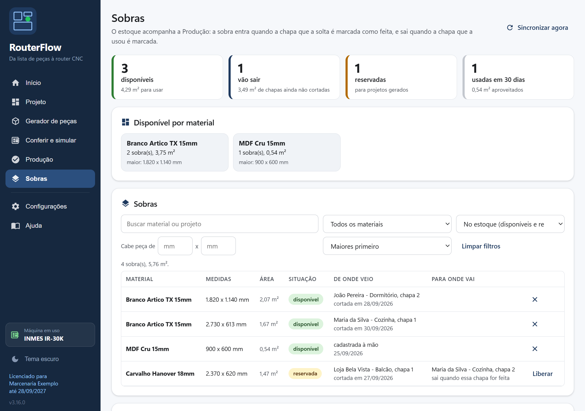
As sobras entram sozinhas quando um projeto é gerado com "Cortar e guardar": a router corta o retalho, sai a etiqueta "SOBRA" e ele fica disponível. No projeto seguinte, com "Usar as sobras do estoque" marcado, o nesting encaixa nelas antes de abrir chapa inteira; a sobra usada fica reservada àquele projeto.
- Busca e filtros: por material ou projeto de origem, só disponíveis ou só usadas, ordenação, e a pergunta "cabe uma peça de A x B?", que aceita a peça em qualquer sentido. O resumo diz quantas sobras passaram e quantos metros quadrados estão livres.
- Liberar devolve ao estoque uma sobra reservada a um projeto que não foi cortado. O X tira do estoque (usada à mão ou descartada).
- Cadastrar uma sobra que já existe: material (igual ao do CSV), lado maior e menor, "Guardar no estoque".
Impressos
- Etiquetas: uma por peça, com medidas, cliente, ambiente, módulo, peça, material, IDs, código, o desenho da peça com as fitas de borda (B1, B2...) e a face de alinhamento, e a legenda das fitas. No formato 100 x 60 mm (impressora de etiquetas, uma por etiqueta) ou A4 com 8 por folha. Sobra cortada ganha etiqueta própria.
- Mapa das chapas: uma folha por chapa com as peças numeradas, medidas, sentido do veio e a sobra que fica. Fica ao lado da máquina.
- Ficha de produção: materiais, chapas, aproveitamento, metros de fita por cor, ferragens do projeto, arquivos gerados e os avisos a conferir.
- Listas em CSV: peças, fitagem por aresta e ferragens.
Todos abrem no navegador; imprima com Ctrl+P. Na impressora de etiquetas, escolha o papel 100 x 60.
Licença e atualização
- Ativar: tela Licença, código da máquina, WhatsApp, colar a chave, Ativar.
- Renovar: com internet, a renovação chega sozinha depois que o suporte a registra. Sem internet, cole a chave nova. "Verificar agora" consulta na hora.
- Avisos: faixa a 30 dias (laranja), 7 e 1 dia (vermelha), e uma janela uma vez em cada marco. Vencida, o programa abre bloqueado na tela Licença até a chave nova.
- Confirmação online: a licença precisa ser confirmada pela internet pelo menos a cada 15 dias. A partir do sétimo dia sem confirmação, uma faixa avisa; no décimo quinto, bloqueia até conectar. Libere github.com e routerflow.com.br no antivírus ou firewall se a confirmação falhar com internet.
- Atualização: obrigatória e automática. O RouterFlow baixa, instala e reabre. Configuração e licença ficam.
- Transferir de computador: a chave é presa à máquina. Exporte a configuração (Cópia de segurança), instale no computador novo, importe e peça a chave nova ao suporte com o código do novo computador.
Problemas comuns e avisos
| O que aparece | O que fazer |
|---|---|
| Peças sobrepostas (vermelhas) | No editor, afaste as peças ou clique em Nesting automático, e regrave |
| Peças mais perto que a folga (laranja) | Regravar afasta sozinho. Se não couber afastar, mova à mão |
| "Não cabe na mesa" na etapa 2 ou chapa vermelha na Router | Confira a área útil em Sua router (X e Y podem estar trocados) ou o tamanho da chapa em Chapas e folgas |
| Coordenadas fora da mesa | Idem acima |
| Nenhuma ferramenta cabe nesse furo ou rasgo | Cadastre uma broca do diâmetro ou uma fresa menor em Ferramentas e gere de novo |
| Furo menor que a fresa escolhida | Cadastre a broca ou deixe a ferramenta dos furos em Automático |
| Corte entrando demais na mesa | Entrada na mesa em 0,1 a 0,3, ou confira o Z zero |
| Não deu para achar o topo da chapa (programa de outra origem) | Z zero do programa é diferente do configurado; confira |
| Rápido dentro da chapa | Programa de outra origem com altura segura baixa; confira |
| Furos ou rasgos na face errada | Configurações, Leitura do CSV, Face que fica para cima |
| Rasgos deslocados metade da largura | Configurações, Leitura do CSV, Referência do rasgo |
| Material do CSV sem chapa cadastrada | Chapas e folgas, Adicionar material, ou a chapa padrão é usada |
| Muitas voltas para cortar | Ferramentas, Passe maior que a espessura mais 0,1 |
| Fresa sobe em alguns pontos do contorno | São as abas; Corte, Abas por peça = 0 se o vácuo segura |
| Programa recusado pela máquina | Pós-processador: importe o .pp do Aspire ou troque o modelo; confira numeração e fim de linha em Avançado |
| "O RouterFlow não consegue confirmar a licença" | Conecte à internet e clique em Verificar agora; libere github.com e routerflow.com.br no firewall |
Atalhos e dicas
- No editor e na Router: + e - zoom, 0 ajusta, F tela cheia, Esc volta, duplo clique no fundo ajusta.
- Botão ? em cada tópico das Configurações explica o tópico.
- O botão maior com "PRÓXIMO PASSO" é sempre a próxima ação.
- Todo aviso tem um botão que leva ao lugar da correção.
- Gerar de novo não perde nada: os arquivos são regravados na mesma pasta e o projeto.json guarda tudo.
- Suporte: Consultor RouterFlow, WhatsApp (34) 99162-7276, routerflowapp@gmail.com, www.routerflow.com.br.